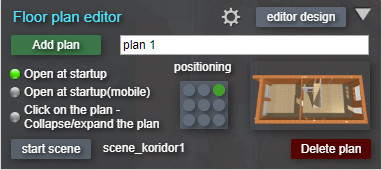
Place the plan images in the FloorPlan/plan. folder
Add plan -
To add a plan, click the "Add plan" button. A default plan image appears with the name
plansm_№, where № is the serial number of the plan.
A drop-down list of names is created at the top of the window. Clicking on the triangle
opens the list, clicking on a name from the list opens the corresponding plan.
Select an image -
Click on the thumbnail with the image of the plan - an explorer window will open. Select
image of the plan from the FloorPlan/plan folder and it will appear in the window with the
plan
Open at startup -
Green indicator - the plan window is open when the tour starts, gray indicator - the window
is minimized.
Open at startup (mobile)- For mobile devices.
Green indicator - the plan window is open when the tour starts, gray indicator - the window
is returned.
Click on the plan - [br]Collapse/expand the plan -
Green indicator - clicking on the plan collapses/expands the plan.
Start scene -
Selecting the scene that will start when the plan is opened. Open the plan, launch the
desired scene belonging to this plan.
Click the "Start scene"button and the name of the current scene will appear next to
it.
The next time you open this plan, the selected scene will be launched.
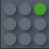
Positioning -
Set the plan's anchor point to the screen. Possible values: top left, left, bottom left,
top, center, bottom, top right, right, bottom right.
Default value: top right
Delete plan -
Deletes the current plan.
Editor design -
Opens an additional panel for editing the window design. More detailed
information here.
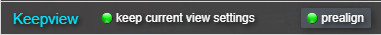
In order for the radar on the plan to correctly show the direction of view and when
navigating through the tour while maintaining the direction, you must first orient the
center of the panoramas to the “north”.
You can do this in advance:
- When assembling panoramas.
- In the native editor "krpano Tools"
If you have already done this, skip this section.
By default, the center of the panorama is the zero point (0 degrees horizontal) and is
considered "north"
On plans and maps, north is at the top by default.
The default direction of the "radar" on the plan is up (to the north) and its value is 0
degrees, which corresponds to 0 degrees in the panorama (center of the panorama)
prealign - Enables alignment editing mode. A crosshair and horizontal angle
indication appears.
Rotate the panorama so that the crosshairs point to the “north” in the panorama, click on the
angle indication or spacebar, the Center of the panorama will be reassigned.
Look at the example on
youtube
.
It often happens that it is inconvenient to align to the north; it is at an angle to the walls.
It is much more convenient to align perpendicular to walls, openings, etc.
Choose an alignment direction that is convenient for you, such as perpendicular to the wall.
Align all panoramas in this direction.
Because now the zero point of the panoramas is not north, make a correction in the compass.
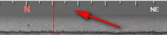
Grab the compass strip at the top of the screen and move it until it aligns with the real north
direction.
See example at
youtube
.
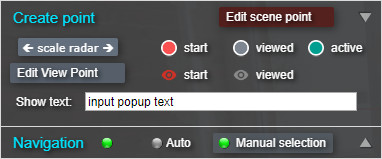
Pre-place the point images in the
FloorPlan/iconPoint folder
Scale radar - Click on the button and drag the mouse left/right to change the
size of the radar.
Start - selecting a point image before viewing the scene. Clicking on the dot
image thumbnail will open the explorer, select the image.
Viewed - selecting a point image after viewing the scene.
Active - image of the active point (with radar).
• Turn on the editing mode - the "Edit scene point" button turns red,
intersecting red lines appear (for ease of positioning).
• Open a panorama, click on the plan in the place where this panorama is located. A
radar dot will appear. By default, the radar will be directed to the north of the
panorama (which was set in advance). Only one point can be created for each
panorama..
 • Buttons on the plan (only in plan point editing mode)
• Buttons on the plan (only in plan point editing mode)
Size- click and drag left/right to change the size of the point. The
changes will apply to all points on this plan.
Delete - delete a point.
heading
radar- radar correction. Click and drag left/right to adjust the
radar direction.
If the north on the plan is not at the top or the north was corrected when aligning the
panoramas, then turn the radar in the north direction.
• Show text- Pop-up text when you hover the mouse. By default, the text is
taken from the title scene.
You can enter your own name for each point.
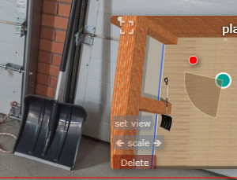
You can create icons (hereinafter referred to as dots) and assign them to open panoramas
with a given magnification and viewing direction.
Place them on plans, drawings, documents, diagrams that you can add to the plans window.
Edit view point - enable/disable point editing.
Clicking on the plan will create a point icon. It will automatically be assigned to the
opening of the current view.
Selecting a point image:
- start - selecting a point image before viewing the scene. Clicking on
the point image thumbnail will open Explorer, select the image in the
floorplan_SM/iconPoint folder.
- viewed - selecting a point image after viewing the scene in the same
folder.
If the editor is enabled
Edit view point, then the image will be assigned to
the active point. If the editor is disabled, the image will be assigned when creating a new
point.
Show text - Enter text into the line. Show text on mouse hover.
Buttons on the plan:
Set view - Select the angle of the place in the panorama that you want to
show, click on the button. The view will be saved at the point and will be opened when you
click on it.
Scale - changes the scale of the point image. Press the button and move while
pressed to the left (zoom out), to the right (zoom in).
Delete - delete a point.
Example on
youtube . Points
for opening selected places on the tour.
Example on
youtube .
Document, drawing with opening points of marked places on the tour.
Compass: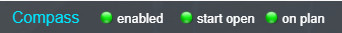
enabled - turning off the compass. The compass release button is removed
and
compass on floor plans
- start open - the compass is deployed at start.
- on plan - display of the compass in the window with the plan.
Keepwiew
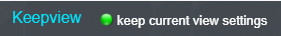
Creates a moving effect. When moving to the next scene, the direction is maintained
view and viewing angle. No prior identical
alignment of all panoramas during stitching.
Click on the "Editor design" button - the design settings panel will
open.
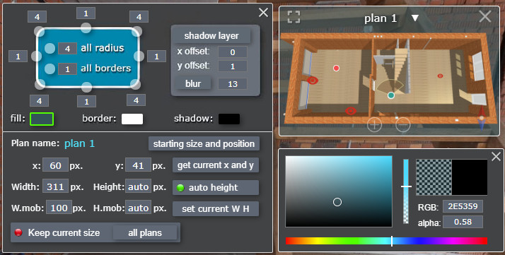
The panel conventionally shows the plan window.
Round buttons on the border to change parameters. Click on it and drag the mouse
left/right.
If you click on the circle that is located on the corner, it will change the rounding of
the corresponding corner of the plan window.
Circle on side (border) - will change the thickness of the border to the corresponding
side.
You can change the radii of all corners or the width of all borders at the same
time.
Next to the round buttons there are windows - they display a numerical value. You can
enter your parameter values.
Shadov layer - Offset the window shadow.
blur - Blur the shadow.
Changing color and transparency
Below are three windows that open the color palette for changing color and
transparency:
fill - Color and transparency of the background of the window with the
plan.
border - Color and transparency of the border.
shadov - Color and transparency of the shadow.
You can copy or paste RGB color or transparency
Example on youtube
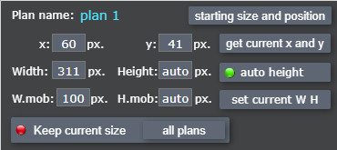
At the bottom of the window, adjust the size and position of the plan window.
Plan name - The name of the current plan to which the changes will be
applied.
starting size and position - Show the size and position of the plan at
start.
x y - Starting values "x" "y" in pixels from the positioning point.
You can enter the value manually.
get current x and y - Move the window with the plan to the desired
position with the mouse and click this button - the x y values will be set as the
starting ones.
If you grab the corner of the plan window, you can resize it.
Width - Current width of the plan. You can enter it manually or set it by
stretching the window with the mouse.
Height - Current height of the plan. Can be entered manually or set by
stretching the window with the mouse, provided that "auto height" is not set
auto height - If active (Green indicator), the height will be set
automatically depending on the set width, in proportion to the plan image.
W.mob - Window width on mobile devices.
H.mob - Window height on mobile devices (if "auto height" is not set)
set current W H - set the current size of the plan window for mobile devices. You can pre-set the size by pulling the window corner.
Keep current size - apply the set sizes as starting ones.
current plans/all plans - apply the set sizes as starting ones to the
current plan (individually)/to all plans.
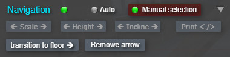
When updating the plugin, this feature is paid. When purchasing a plugin, it is
included in the price.
Navigation works provided that all panoramas are aligned in the same direction (see prealign ) and all points are placed on the plans.
To navigate by arrows, simply click in an empty space in the direction of the arrow.
Navigation - if the indicator opposite the inscription is green, then
navigation is enabled. Clicking on the indicator will switch to the opposite state.
Auto- Arrows in the tour are placed automatically for all panoramas located on
the plan. There is no option to exclude or move arrows.
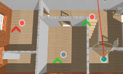
Manual selection - Arrows are created automatically, but you can choose to
display the desired arrows, and you can adjust the position of the arrow.
When this mode is activated, a red arrow indicator appears on the plan near each point.
Click on the indicator - it will turn green and an arrow will appear in the panorama.
You can adjust the position of the arrow by dragging it with the mouse.
Below are buttons for changing arrow options, which apply to all arrows.
To change a parameter, you need to click on the button and move the mouse (left/right).
You will immediately see the changes.
🡸 Scale 🡺 - Change the size of the arrows.
🡸 Height 🡺 - Vertical offset of the arrows.
🡸 Incline 🡺 - Tilt the arrow forward.
Print <\> - Copy the code of hotspots that are in the current panorama to the
clipboard.
You can paste the copied code into the scene code and edit the parameters as
you wish.
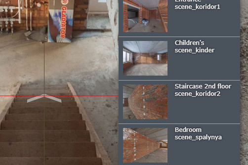
The transition to another floor must be specified manually.
Press the
transition to floor 🡺 button, a list of panoramas with miniatures
(which are present on the plans) will appear. Select the panorama you want to go to from the
list - an arrow will appear in the crosshairs. Adjust its position.
Remowe arrow - Remove the arrow for moving to another floor.
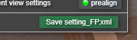
Click the save button, in the drop-down window specify the path to save the file
FloorPlan/setting_FP.xml
If your browser automatically saves to downloads, then manually replace the file in the
FloorPlan/setting_FP.xml
folder with it.
Restart your browser - the tour will be updated with the saved changes.
If backup
"backup" is activated, the backup file is first saved with
the save date in the file name.
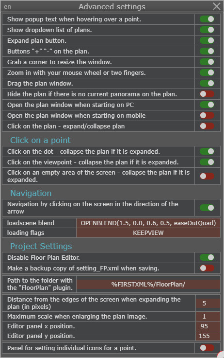
- Open the panel with advanced settings.
Customize the settings to your liking. Clicking the switch on the right will change the state.
On the top left is a language switch button (en/ru)
Setting panel for individual icons for a point - activates a floating panel for individual editing of a point.
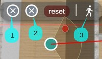
1 - click will open the folder for selecting the icon of the unviewed panorama.
2 - click will open the folder for selecting the icon of the viewed panorama.
reset - setting icons to default .
3 - Disable/enable saving the view when switching to a panorama. When disabled, the panorama will load with a preset view.
When you finish working with the plan, you save all the settings in this file "setting_FP.xml". Some
You can change the parameters in this file manually.
point_url_1 - Name of the image of a point on the plan (unviewed scene).
point_url_2 - Name of the image of the active point on the plan.
point_url_3 - Name of the image of a point on the plan (viewed scene).
pointv_url_1 - Name of the point image in the document (unviewed scene).
pointV_url_2 - Name of the point image in the document (viewed scene)
Icons should be located in the
FloorPlan/iconPoint folder
radar_scale - Default radar scale.
lang - Default language in the advanced settings panel(en/ru).
Below are the styles and layers:
action name="prealignFLPL" - Action for aligning panoramas
textstyle name="showtext_1" - Style of pop-up text when hovering over
points.
style name="arrow_navi_flpl" - Style of navigation arrows.
style name="pointflpl" - Style of points on the plan (with radar).
style name="pointflpl_v" - Style of points on the plan for opening
views.
layer name="cont_fp_all" - The main container of the window with a layout
for plans and buttons.
layer name="plan_cont_fp2" - container for layers with images of
plans.
Krpano knowledge required!
The file FloorPlan/xml/style_Flpl.xml contains the styles, layers and
settings of some plugin elements, the showtext.xml and combobox.xml plugins are
connected.
You can customize the button design, position in the plan window (expand to full screen,
close, compass, +, -), configure the radar.
You can configure the parameters of the combo box with the list of plans, and move it
outside the plan window.
Set up compass marks and signatures.
Configure auto navigation settings.
Plugin is provided "As Is" without warranty of any kind, either express or implied,
including any
warranty of quality, merchantability, or fitness for a particular purpose. In no event
will author of plugin be liable for loss of data,
costs of procurement of substitute goods or services or any special, consequential or
incidental damages, under any cause of action and regardless
of whether or not plugin author have been advised of possibility of such damage. This
limitation will apply notwithstanding any failure
of essential purpose of any limited remedy provided herein. In any event plugin author
will have no liability arising out of this agreement.